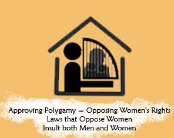

|
|
|
Browsing
Contact Us |
Campaigners |
Face to Face |
Tribune |
Interview |
News |
On the Web |
One Million |
Report
Farsi | Français | German | Italian | Spanish | العربية Also in this section
|
 Contra el Proyecto de Ley de Protección de la Familia: Declaración de los grupos y activistas de la Coalición de los Derechos de la Mujer contra el " Proyecto de Ley de Protección de la Familia "Wednesday 3 September 2008 Traducido por: Lorenzo Higueras Martínez Cambio para la Igualdad: el futuro de la familia iraní ha entrado hoy en una delicada y decisiva fase. El 8 ª parlamento considera la aprobación como Ley de un Proyecto de Ley titulado: "Proyecto de ley de Protección de la Familia." El proyecto de ley se ha hecho tristemente célebre entre los activistas por los derechos de las mujeres, que se refieren a él como "Proyecto de Ley Contra la Familia". El proyecto de ley fue presentado al Parlamento en agosto de 2007 por la administración del Sr. Ahmadinejad. El 9 de julio de 2008, el proyecto de ley fue aprobado por la Comisión Jurídica y la Comisión Judicial del Parlamento y, como tal, está programada en cualquier momento su llegada para su examen y ratificación por el Pleno del Parlamento. • Las carencias de derechos legales de las mujeres se refuerzan a través de este proyecto de ley. Esta porción de la legislación no sólo no persigue poner fin a la práctica de la poligamia, sino que en realidad alienta la poligamia, al exigir al hombre que desee tomar esposas adicionales la única condición de su capacidad financiera como factor decisivo ante los tribunales. • La "Ley de Apoyo a la Familia" no sólo refuerza la falta de derechos de las mujeres para la obtener el divorcio; el procedimiento y período de espera para obtener el divorcio se extienden, con lo que se imponen mayores dificultades y obstáculos a las mujeres en este proceso. • El "Proyecto de Ley Contra la familia" no sólo no prohíbe la práctica del matrimonio temporal para los hombres casados, ni siquiera requiere la inscripción de esos matrimonios. • El " Proyecto de Ley Contra la familia" no solo no concede a la mujer casada derechos incondicionales al empleo, sino que impone además un impuesto sobre sus Mehrieh en el momento del matrimonio. [I] • No sólo no existen ayudas para a la familia en el "Proyecto de Ley Contra la Familia", las anticuada e inhumanas normas laborales promovidas por esta pieza de legislación sólo sirven para empujar la unidad familiar hacia la inestabilidad y crisis. • Teniendo en cuenta los puntos mencionados arriba, puede verse claramente que esta legislación, en lugar de proporcionar "apoyo" a la familia, trabaja para "menoscabar" el concepto de las relaciones humanas entre hombres y mujeres en la estructura familiar. • Los componentes inhumanos en el "Proyecto de Ley Contra la Familia" se introducen al Parlamento por la Administración en un momento en que somos testigos del incremento de las catástrofes humanas como consecuencia de las desigualdades promovidas por las leyes. A modo de ejemplo podemos mencionar el aumento de la tasa de criminalidad, el aumento de las tasas de violencia contra las mujeres y los niños, y el aumento de las tasas de homicidio conyugal como consecuencia de las carencias en los derechos de las mujeres al divorcio. Los Tribunales de familia están llenos de casos que hablan de familias que han llegado a un callejón sin salida. Si las desigualdades de nuestras leyes se abordasen debidamente y cambiasen sin duda seríamos testigos de un conjunto muy diferente de circunstancias. Por estas razones, los firmantes de esta declaración, que han trabajado durante años para hacer frente a las tragedias que se derivan de estas leyes, se han unido para crear una amplia coalición. Abrigamos la esperanza de que avanzando juntos los activistas por los derechos de las mujeres seamos capaces de desempeñar un papel decisivo en el futuro de las mujeres de nuestro país y promover una relación justa entre el hombre y la mujer dentro de la familia, basada en la humanidad y en la compasión. En ese sentido, invitamos a otros, independientemente de sus orígenes y tendencias ideológicas, sus etnias y religiones, a que apoyen a las mujeres de su país, y que se unan a nosotros en esta coalición, a fin de que mediante la utilización de nuestras experiencias y capacidades podamos trabajar colectivamente para prevenir la aprobación de esta legislación como ley. Los primeros grupos en la firma de la presente Coalición: • Cambio para la Igualdad, el Sitio de la Campaña por un millón de firmas Organización de Mujeres de Irán • Escuela Feminista • Women’s field • Organización de Mujeres Periodistas • Organización de Defensores de los Derechos Humanos • Comité de Madres de la Campaña por un millón de firmas • Relaciones públicas de la Campaña por un millón de firmas • El Comité del Taller de la Campaña • Campaña de un millón de firmas en California • El Comité de Derechos Humanos de la Organización iraní de • Hastia Andish ONG • Madres por la Paz • Asamblea reformista de la Mujer • Organizaciones de Derechos Humanos de Kurdistán • Organización Independiente de Estudiantes y Ex-Alumnos de Qazvin • Red Cultural Iraní en Europa • Organización de Investigación Cultural de Irán-Suecia • Comité de Estudiantes para la Defensa de los Presos Políticos • El sitio de la Voz del Pueblo Para más información acerca de esta coalición y los demás signatarios, así como las novedades con respecto a la " Proyecto de Ley de Protección de la Familia " visite: [i] Mehrieh es la suma de dinero acordada por el marido y la mujer como condición del contrato de matrimonio. Esta suma se devuelve a la esposa cuando ésta la requiere, aunque a menudo se le devuelve en el momento del divorcio. Debido a que las mujeres tienen tan pocos derechos en el matrimonio y especialmente en la obtención del divorcio, muchas veces tienen que renunciar a su Mehrieh para obtener el divorcio o como condición para obtener otros derechos (por ejemplo, cuando sus maridos toman en segunda esposa, una mujer puede exigir su Mehrieh). Como tal, la Mehrieh se ha transformado en una práctica que garantiza un mínimo de derechos de la mujer en el matrimonio o el divorcio. Este proyecto de ley impone un impuesto sobre el dinero que las mujeres aún no han recibido e incluso pueden no recibir nunca, trabajando para socavar las garantías mínimas que las mujeres tienen en el sistema jurídico iraní. |